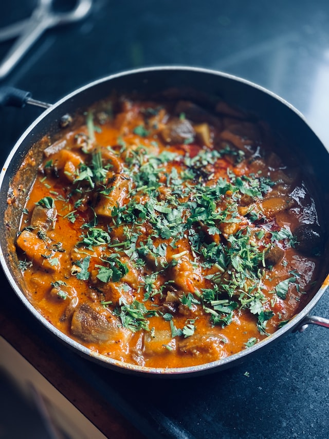

Curry

Curry is an extremely versatile dish. One is able to combine a huge variety of meats with an explosion of flavours.
The South-Asian subcontinent is very rich in spices, so it's not surprising this delicious dish (originating as part of their cuisine)
is eaten so widely over there.
Ingredients
- 200g of diced meat - either chicken/mutton/lamb. If you're a vegetarian you can replace this with paneer
- 2x Onions
- 5x Chillis (less if you're not big on spice)
- 3x Garlic Cloves
- Spices - including at least 1/2 tablespoon each of Paprika, Turmeric, Ground Coriander and Cumin
- Optional additional spices/herbs such as Chilli Flakes, Cardamom, Oregano
- Freshly chopped coriander is a nice touch to sprinkle on top at the end, but not necessary
Instructions
- Heat oil in a pan, using just a small amount of oil, but enough to shallow fry something.
- Chop onions, chillis and garlic into small pieces. Fry these in the pan until the onions turn brown.
- Add spices and salt to the pan. The amount you add will depend on how you like it, so feel free to taste test the flavour of your
dish before adding the meat. Note: It should be quite salty at this stage as the meat will absorb flavour. Also curries are usually
eaten alongside something like rice or roti.
- Add meat to pan and stir well! And add a small amount of boiling water too for some liquidity in the curry. You can add more if
you'd like, this will determine the thickness of your curry.
- Mix thoroughly again once water has been added and then cover it. Let it cook depending on the type of meat that's been added.
Chicken should take around 10-15 mins, lamb or beef will take around 25 mins. Remember to test how well it has been cooked as
you're going along
- Once cooked, enjoy the end result along with some rice or roti!
To find other recipes, visit our Homepage.